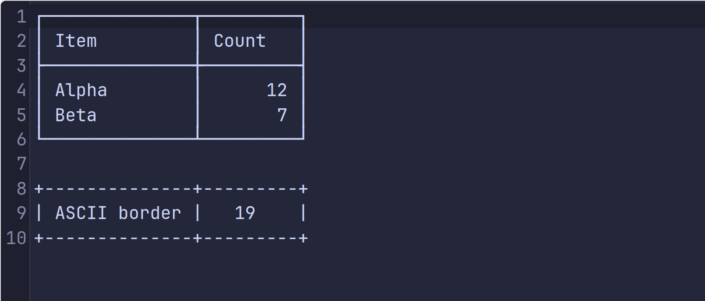
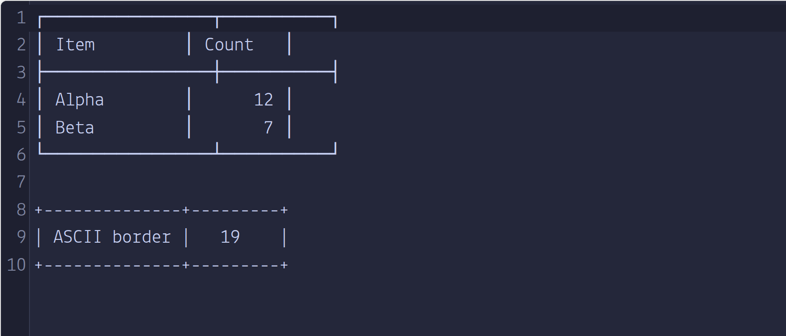

A PATCH WORKFLOW FOR MONOSPACED FONTS
Mono, meet the whole icon set.
Add Nerd Fonts icons to the monospaced typeface you already use. Keep the same files, spacing, and terminal workflow, with folders, language marks, and git symbols ready to render.
YOUR FONT, PATCHED
Keep your mono. Add the icons.
Start with original font files and their license. The guided script handles family selection, patcher version, validation, and packaging.
Get the project
git clone https://github.com/voltaire-toledo/nerdified-fonts.git cd nerdified-fontsAdd your source files
Place each unpatched family under
fontsrc/FontName/, including its license. Nested folders are supported.Run the guided build
./scripts/patch_fonts.shThe host script can install dependencies on supported systems. For a container build, run
docker compose run --build --rm patcher.Inspect and install
Find fonts in
patched/and family/mode archives inreleases/. Validate fonts before selecting them in your terminal. The script does not install fonts into your operating system.
SAME GLYPH, DIFFERENT FIT
Choose the icon width
See how one Nerd Font folder glyph occupies a terminal line in each upstream width style.
Can overhang the next cell
Fits one terminal cell
Advance follows visual width
| Variant | Icon behavior | In this project |
|---|---|---|
| Nerd Font (NF) | Icons may overhang the next cell. | normal mode |
| Nerd Font Mono (NFM) | Icons fit a single terminal cell. | mono mode |
| Nerd Font Propo (NFP) | Icon advances follow their visual width. | Not exposed by this wrapper |
auto chooses normal or mono from the source face. forced changes glyph-conflict handling; forced-mono combines that policy with mono width. Read the mode details.
Look at the joins
Box corners and vertical strokes should meet. These captures compare unpatched fonts in Programming Fonts. They show one browser preview, rather than a verdict on every platform or patched result.
JetBrains Mono
Box strokes align in this preview.

Lekton
Unicode box strokes drift between rows.

Fallback fonts can change the result. Use the local font validator to compare glyph shapes and browser advances, then check the patched face in your actual terminal.
Keep the font licenses
The project’s scripts and documentation use MIT. Source fonts and Nerd Fonts glyph collections retain their own terms. Check whether a license permits distributing modified fonts before committing source files or sharing archives.
Read the license guide